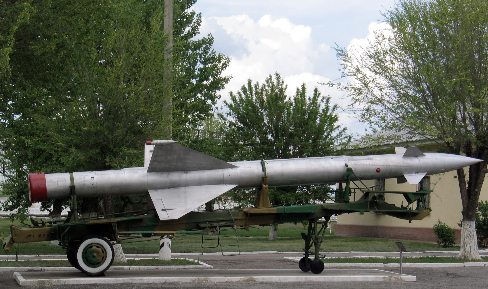

Этап
Созданная им на кафедре в 1959 году «Отраслевая лаборатория вычислительных средств и систем управления» разрабатывала новые образцы вычислительной техники, служила учебной базой для обучения студентов. Многие из этих разработок были внедрены в промышленность, в том числе в ее оборонные отрасли. Полуавтоматические системы управления противотанковыми управляемыми снарядами (ПТУРС) с использованием в качестве носителей танков, вертолетов, самолетов; информационно-вычислительные системы и их программное обеспечение в зенитных ракетных и артиллерийских комплексах; системы отображения информации на подвижных носителях — вот далеко не полный перечень работ, выполненных отраслевой лабораторией. За участие в разработке и освоении серийного производства образцов новой техники профессорам Л.Н. Преснухину, Ю.М. Смирнову, В.А. Бархоткину, а также доцентам А.В. Прокопьеву и И.А. Беленкову была присуждена Государственная премия СССР (1972).Л.Н. Преснухин принимал самое непосредственное участие в создании Московского института электронной техники и стал ее первым ректором (1966-1988).
С-25, ранее «Бе́ркут»
